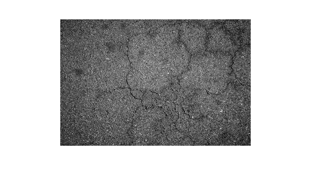
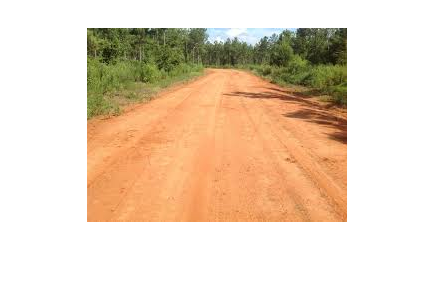
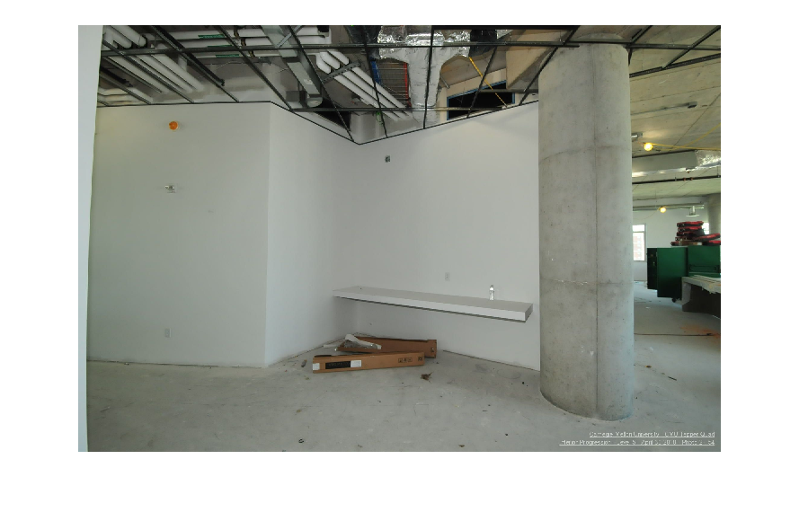
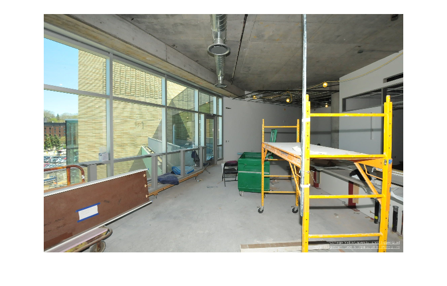
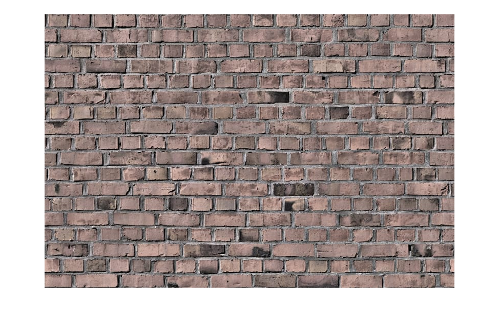
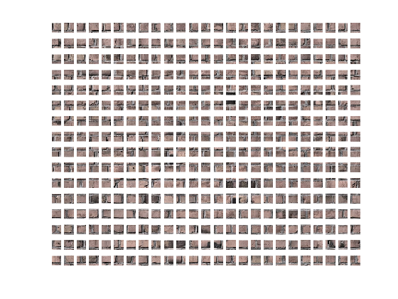
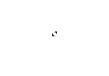

Material Recognition
Classification of a site image into mutiple classes of construction material
Contents
Classes of construction material
Different classes considered in the study * Concrete * Brick * Asphalt * Soil * Timber
Initialization
inputImage = struct('Image',{},'Class',{}); patchFeatures = struct('Feature',{}, 'Class',{}); f = @features; patchSize = [32 32]; patchedImage = {};
Read the dataset from the directory
%Choosing the directory containing dataset and extracting path of all %subfolders disp 'Select train data folder' dataDir= uigetdir(); subFolders = genpath(dataDir); subFolders_pathname = strsplit(subFolders,';'); numberOfClasses = length(subFolders_pathname) - 2; % -1 because parent class is not is not class but % but is in subFolders_pathname z = 1; %Reading the images, dividing them in patches and finally storing them for k = 2:length(subFolders_pathname)-1 % Extracting class name className = strsplit(subFolders_pathname{1,k},filesep); className = char(className(end)); % Getting the image files in subfolder imagefiles = dir(subFolders_pathname{1, k}); nfiles = length(imagefiles); %Inside the subfolder, reading image for i = 3 : nfiles currentfile = imagefiles(i); currentImage = imread([subFolders_pathname{1, k},char(filesep),currentfile.name]); % transforming the gray scale to RGB storage format, if any if size(currentImage,3) == 1 currentImage(:,:,2) = currentImage(:,:,1); currentImage(:,:,3) = currentImage(:,:,1); end % Storing the image and corresponding class label inputImage(z).Image = currentImage; inputImage(z).Class = className; z = z + 1; end end
Select train data folder
Visualization of the dataset(1/2)
Dataset from the web
figure('Name', inputImage(1).Class) imshow(inputImage(1).Image); figure('Name', inputImage(10).Class) imshow(inputImage(10).Image); 
Visualization of the dataset(2/2)
Dataset from the Construction site
disp 'Select Construction Data' consData = uigetdir(); consImage = dir(consData); for i=3:length(consImage) consI = imread([consData filesep consImage(i).name]); figure() imshow(consI); end
Select Construction Data Warning: Image is too big to fit on screen; displaying at 33% Warning: Image is too big to fit on screen; displaying at 33% 
Visualization of the patched image
Displaying the patch image for presentation
for i = 5 pi = 1; currentImage = inputImage(i).Image; for j = 1:patchSize(1):(size(currentImage,1)-(patchSize(1)-1)) pj = 1; for k = 1:patchSize(1):(size(currentImage,2)-(patchSize(1)-1)) patch = currentImage(j:j+(patchSize(1)-1),k:k+(patchSize(1)-1),:); patchedImage(pi,pj) = {patch}; pj = pj+1; end pi = pi+1; end end %Display the original image figure('Name',inputImage(i).Class) imshow(inputImage(i).Image) % Loop to plot all patched images in one figure figure('Name', [inputImage(i).Class 'Patched']); k =1; for di = 1 : size(patchedImage,1); for dj = 1 : size(patchedImage,2); this_image = patchedImage{di,dj}; ax = subplot(size(patchedImage,1),size(patchedImage,2),k); imshow(this_image, 'Parent', ax); k = k+1; end end 
Feature Extraction and Selection
Subdividing the images in patches of size 'patchSize', calculating features and storing in a matrix
z = 1; for i = 1:size(inputImage,2) currentImage = inputImage(i).Image; for j = 1:patchSize(1):(size(currentImage,1)-(patchSize(1)-1)) for k = 1:patchSize(1):(size(currentImage,2)-(patchSize(1)-1)) patch = currentImage(j:j+(patchSize(1)-1),k:k+(patchSize(1)-1),:); patchFeatures(z).Feature = f(patch); patchFeatures(z).Class = inputImage(i).Class; z = z+1; end end end figure('name', 'Features visualization (GLCM)') imshow(patchFeatures(210).Feature{1,1})
Naive Bayes Classifier training
Dimensionality reduction of feature space by PCA and classifier training
featureVector = zeros(length(patchFeatures), 64); for i=1:length(patchFeatures) featureVector(i,:) = reshape(patchFeatures(i).Feature{1,1}, [1 64]); % reshape(patchFeatures(i).Features{1,1}, [1 1024])]; end % Principal Component Analysis p = pca(featureVector); %selecting features for the first 30 principal components p = p(:,1:30); fm = featureVector * p; % Training classifier pred = ML(fm, {patchFeatures.Class}');